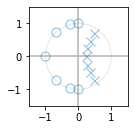
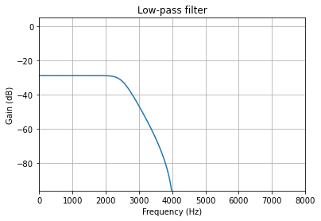

Introduction to Fixed Point Signal Processing
Posted on Wed 09 December 2020 in signal-processing
Introduction
In 1927, Alan Turing’s paper discussed a class of numbers called finite and computable numbers. This allowed for the construction of digital computer. Signal processing, in essence, is the study of converting real-world signal into finite and computable numbers, and processing them with the fewest bits possible.
What are fixed-point numbers?
- Over the years, computers had different encoding schemes for
representing and processing numerical data
- Binary coded decimal: Still used today for financial calculations, inefficient.
- Binary one’s complement: Used by early computers like Apollo Guidance Computer. Very rare to see a computer with this numeric encoding for integers. However, IEEE 754 floating point encoding are indeed one’s complement.
- Binary two’s complement: Most common implementation for integers for all major architectures, including x86, ARM, RISC-V and many DSP
- Floating point: Makes writing math expressions easy, there are several standards and extension. IEEE 754, Posit Unum III
- Bignum: Arbitrary precission arithmetic, used for cryptography, mathmatics, etc.
- There are otheres: Logarithmic numbers, Computer algebra system (CAS), etc.
- Fixed-point in this context means binary two’s complement numbers with scaling factor for fractions.
It’s the 2020’s, do we still need fixed point arithmetic for signal processing?
- Floating point machines are more common now, but that was not the case all the time.
- FPUs (a.k.a math coprocessor) were expensive and slow!
- Intel 8087 costed around $375 in 1985, $915.15 in 2020 USD
- FPU was uncommon in desktop computers (extra headache for programmers)
- Most programs were written without the support of FPU
- In the past, fixed point signal processing was mainstream
- Speak & Spell used TMS5100 for speech synthesis (70’s)
- AT&T’s used DSP1 for call routing (80’s)
- NeXTcube and ProTools used Motorola 56001 DSP to process image and audio (90’s)
- To answer the question: It depends on various costs and benefits
Pros and cons
- On one hand, doing signal processing in floating point offers:
- Greater dynamic range
- Less development time
- Precision
- Fixed point is still best at:
- Minimizing cost of parts: Less logic gates are needed to operate on integers than floating point
- Efficient power utilization
- More bandwidth utilization (less bits)
Where are fixed point arithmetic done today?
- Your phones modem: 3G, LTE, and now 5G, where FPGAs are involved for software defined radios
- Wearable electronics: BlueTooth earbuds, smart watch, smart glasses, etc.
- Physical layer network communication: Fiber-optic, Satellite, etc.
- Special purpose accelerators: Convolutional neural network engines, audio/video codec, image processors
- Operating systems kernel (i.e. Linux, XNU): Cannot execute floating point math in kernel-mode in the Linux Kernel (Well, you can, but it's a lot harder)
Getting Started with Fixed-point Arithmetic
- Know the Q notation
- The Q notation convention describes binary fixed point number scaling and bits
- Written as Qm.n, where m is the number of bits reserved for integer portion and **n* is the number of bits reserved for fractional portion.
- Sometimes m is not indicated in the notation if there are no bits
reserved for integer bits or sign bit
- For example Q15 is used to decribe the format of 16-bit PCM format used by CDs (you know… those shiny disks). Q15 can also be written as Q1.15, where there are 15 bits reserved for fraction and 1 bit for sign.
- CD audio has a range of [-1.0, +0.999969482421875]
- What happened to +1.0?
- Sometimes U is used to describe unsigned
- 8-bit PCM samples tend have a bias (\(s + 127\)) in their format, typically U8 is used to describe that format.
- Sometimes S16 is used to represent Q1.15 as well
How to get the range of values for a certain fixed-point type:
What is the resolution of a certain fixed-point type:
What is the resolution for a 32-bit floating point type? Extra credit.
def qrange(m, n):
"""Get numeric range of _signed_ Qm.n integers
Args:
m: Number of bits for integer portion
n: Number of bits for fraction portion
Returns:
tuple(min_value, max_value)
"""
from numpy import ldexp
min_value = ldexp(-1.0, m - 1)
max_value = ldexp(+1.0, m - 1) - ldexp(1.0, -n)
return (min_value, max_value)
How to convert decimal to fixed point
Given \(Q(m, n)\), for a given value \(x\), quantized fixed point value, \(y\) is:
May want to saturate the results so they don’t overflow in fixed point:
So final expression:
from numpy import clip, ldexp, rint
def ftoq(x, m, n):
"""Convert a float value to fractional integer
Args:
x: A double/float value
m: Bits for integer portion
n: Scaling factor from Q notation
Returns:
np.array_like(int)
"""
vmin, vmax = qrange(m, n)
return int(rint(ldexp(clip(x, vmin, vmax), n)))
def qtof(x, m, n):
"""Convert a fractional integer to float
Args:
x: A double/float value
m: Number of bits for integer portion
n: Number of bits for fraction portion
Returns:
np.array_like(float)
"""
vmin, vmax = qrange(m, n)
return clip(ldexp(float(x), -n), vmin, vmax)
from numpy import vectorize
vftoq = vectorize(ftoq)
vqtof = vectorize(qtof)
def vquantize(x, m, n):
return vqtof(vftoq(x, m, n), m, n)
print("\n".join(f"{n: 1.08f} -> {ftoq(n, 1, 15): 6d}" for n in (0.5, 0.707, 0.99999999)))
print("\n".join(f"{n: 6d} -> {qtof(n, 1, 15): 1.08f}" for n in (16384, 23168, 32767)))
0.50000000 -> 16384 0.70700000 -> 23167 0.99999999 -> 32767 16384 -> 0.50000000 23168 -> 0.70703125 32767 -> 0.99996948
Converting from/to fixed-point in C, C++
Interface:
/* frac_convert.h */
#ifndef FRAC_CONVERT_H
#define FRAC_CONVERT_H
double qminv(int m, int n);
double qmaxv(int m, int n);
long ftoq(double x, int m, int n);
double qtof(long x, int m, int n);
double clip(double v, double vmin, double vmax);
#endif /* FRAC_CONVERT_H */
Implementation:
/* frac_convert.c */
#include <math.h>
long ftoq(double x, int m, int n) {
return (long)(rintl(ldexp(clip(x, qminv(m, n), qmaxv(m, n)), n)));
}
double qtof(long x, int m, int n) {
return clip(ldexp((double)x, -n), qminv(m, n), qmaxv(m, n));
}
double qmaxv(int m, int n) {
const double one = 1.0;
return ldexp(one, m - 1) - ldexp(one, -n);
}
double qminv(int m, int n) {
(void)(n); /* unused parameter */
return ldexp(-1.0, m - 1);
}
double clip(double v, double vmin, double vmax) {
return fmax(vmin, fmin(v, vmax));
}
Exercise
Suppose you are working on a thermostat for ACME Corporation. In order to reduce production and power costs, they have decided to choose a microprocessor without an FPU. Your job is to take temperature data from the sensor, which outputs in Celsius, and convert it to Fahrenheit for the user interface team. They want to be able to display up to 1 decimal place accurately. You are free to decide on the appropriate QM.N format. Note, the formula for convertion is:
- How many bits are needed for fractional portion in order to achieve one decimal place of accuracy?
- Given temperature sensor has a range of -100° to 155° in Celsius, which corresponds to roughly -150° to +310° degrees Fahrenheit. How many bits do we need for the integer portion?
from numpy import log2, ceil
# Question: How many bits do we need to compute this result?
n = 1 # Decimal places
print(f"Numbers of bits needed for {n} decimal places accuracy: {ceil(abs(log2(10 ** (-n))))}")
# Question: Given temperature sensor has a range of -100 to 155 in Celsius,
# which corresponds to roughly -150 to +310 degrees Fahrenheit. How many bits
# do we need for the integer portion?
n = 310
print(f"Bits needed to store up to {n}: {ceil(log2(n))}")
# Let's give it some room and use an extra two bits for quantization error.
# Also, one extra bit is needed for sign, thus a format of Q10.6 is needed.
# The computation can be done using 16 bit signed integers at Q10.6 format
# Note the formula: F = 9/5 * C + 32
Numbers of bits needed for 1 decimal places accuracy: 4.0 Bits needed to store up to 310: 9.0
ftoq(9/5, 10, 6), ftoq(32.0, 10, 6), qtof(-7404, 10, 6)
(115, 2048, -115.6875)
# Reference function for comparison
def ctof_f64(c):
"""Convert Celsius to Fahrenheit
Args:
c: Celsius
Return:
Fahrenheit
"""
return 9/5 * c + 32.0
def ctof_q10x6(c):
"""Convert Celsius to Fahrenheit in Q10.6 format
Args:
c: Celsius in Q10.6 format
Return:
int16(Q10.6)
"""
C0 = int16(ftoq(9/5, 10, 6))
C1 = int16(ftoq(32, 10, 6))
return q10x6mul(C0, c) + C1
from numpy import int32, int16, clip
def qround(a, b):
"""Round an integer `a` by `b`"""
if a < 0:
a = a - b
else:
a = a + b
return a
def q10x6mul(a, b):
"""Multiply two Q10.6 integers"""
a = int32(a)
b = int32(b)
c = a * b # c: Q20.12
c = qround(c, 0b10000) # Round to nearest b0.000001 bit
c = c >> 6 # Rescale c to Q10.6
c = clip(c, -32768, 32767) # Saturate result
return int16(c)
Same thing can be implemented in C as:
#include <stdint.h>
typedef int16_t q10x6_t;
typedef int32_t q20x12_t;
q10x6_t celsius_to_fahrenheit(q10x6_t celsius) {
const q10x6_t C0 = 115; /* 9/5 in Q10.6 */
const q10x6_t C1 = 2048; /* 32 in Q10.6 */
/* Multiplying Q10.6 by Q10.6 -> Q20.12 */
q20x12_t y = ((q20x12_t)celsius) * ((q20x12_t)C0);
/* Rounding to nearest 6 bits */
y += (y < 0) ? -0x10 : +0x10;
y >>= 6; /* Q20.6 */
/* Add 32 to result */
y += C1;
return (q10x6_t)y;
}
Plotting the errors
from numpy import linspace
print("Celsius \tQ10.6 \t\tF64 \t\tError")
for c in linspace(-100, 155, num=15):
cq10x6 = ftoq(c, 10, 6)
fq10x6 = ctof_q10x6(cq10x6)
f = ctof_f64(c)
fq = qtof(fq10x6, 10, 6)
perr = abs(f - fq) / f * 100
print(f"{c: 3.1f}° C \t{fq: 3.1f}° F \t{f: 3.1f}° F \t {perr: 2.2} %")
Celsius Q10.6 F64 Error -100.0° C -147.7° F -148.0° F -0.2 % -81.8° C -115.0° F -115.2° F -0.21 % -63.6° C -82.2° F -82.4° F -0.22 % -45.4° C -49.5° F -49.6° F -0.26 % -27.1° C -16.8° F -16.9° F -0.45 % -8.9° C 16.0° F 15.9° F 0.15 % 9.3° C 48.7° F 48.7° F 0.087 % 27.5° C 81.4° F 81.5° F 0.12 % 45.7° C 114.1° F 114.3° F 0.13 % 63.9° C 146.9° F 147.1° F 0.14 % 82.1° C 179.6° F 179.9° F 0.15 % 100.4° C 212.3° F 212.6° F 0.15 % 118.6° C 245.1° F 245.4° F 0.15 % 136.8° C 277.8° F 278.2° F 0.16 % 155.0° C 310.5° F 311.0° F 0.16 %
import matplotlib.pylab as plt
from numpy import linspace, vectorize
vctof_q10x6 = vectorize(ctof_q10x6)
c = linspace(-100, 155, num=512)
cq = vftoq(c, 10, 6)
fq = vctof_q10x6(cq)
fq = vqtof(fq, 10, 6)
f = ctof_f64(c)
perr = abs(f - fq)/100.0
plt.plot(c, perr)
plt.grid(True)
plt.xlabel("° Celsius")
plt.ylabel("% Error during conversion")
plt.show()
Fixed point signal processing
- There are only two rules of fixed point signal processing:
- Thou shalt not overflow
- Thou shalt not underflow
- Always design your filters so they are within range of operation
- Usually with FIR filters, it is not a problem
- IIR filters become a challenge, can be avoided with low order filters
FIR filters in fixed-point
#include <stdint.h>
typedef int16_t q15_t;
typedef struct fir_instance_q15
{
q15_t *coeff;
q15_t *state;
uint32_t index;
uint32_t taps;
} fir_q15_t;
void generic_fir_q15(fir_q15_t *self,
q15_t *dst,
const q15_t *src,
uint32_t frames);
- CMSIS DSP documentation for fixed-point FIR filter
- CMSIS DSP implementation for FIR filter arm_fir_q15.c
Generic FIR filter implementation in C:
#include "generic_fir_q15.h"
static q15_t q15_rsat(q63_t x);
void generic_fir_q15(fir_q15_t *self, q15_t *dst, const q15_t *src,
size_t frames) {
size_t taps = self->taps;
size_t index = self->index;
q15_t *state = self->state;
const q15_t *coeff = self->coeff;
for (size_t i = 0; i < frames; ++i) {
/* Place input in circular buffer */
state[index] = src[i];
/* Circularly increment index */
++index;
if (index >= taps)
index = 0;
/**
* Use a large enough accumulator to avoid overflow. If coefficients
* are Q1.15 and incoming sample data are also Q1.15, then each
* multiplications will require at-least 32 bits (Q2.30), and the
* worse case scenario of each addion will be an overflow which will
* require an extra bit to capture. Without going into the assembly
* level, it is more portable to get a larger data type (int64_t).
*/
q63_t acc = 0;
/* Convolution Loop */
do {
for (size_t j = 0, k = index - 1; j < index; ++j, --k)
acc += ((q31_t)coeff[j]) * ((q31_t)state[k]);
for (size_t j = index, k = taps - 1; j < taps; ++j, --k)
acc += ((q31_t)coeff[j]) * ((q31_t)state[k]);
} while (0);
dst[i] = q15_rsat(acc); /* Typically this is one machine instruction in DSPs */
}
/* Store the updated circular buffer address */
self->index = index;
}
static q15_t q15_rsat(q63_t x) {
const q63_t vmax = 32767;
const q63_t vmin = -32768;
const q63_t rounding_value = 1 << 15;
/* Round to nearest Q1.15 */
x += (x > 0) ? rounding_value : -rounding_value;
/* Rescale to Q1.15 */
x = x >> 15;
/* Saturate result */
x = (x >= vmax) ? vmax : x;
x = (x <= vmin) ? vmin : x;
return (q15_t)x;
}
import numpy as np
from scipy import signal
import matplotlib.pyplot as plt
from zplane import zplane
def plot_response(fs, w, h, title, sb=-40):
"Utility function to plot response functions"
fig = plt.figure()
ax = fig.add_subplot(111)
ax.plot(0.5*fs*w/np.pi, 20*np.log10(np.abs(h)))
ax.set_ylim(sb, 5)
ax.set_xlim(0, 0.5*fs)
ax.grid(True)
ax.set_xlabel('Frequency (Hz)')
ax.set_ylabel('Gain (dB)')
ax.set_title(title)
def sos2zpk(sos):
b, a = signal.sos2tf(sos)
z, p, k = signal.tf2zpk(b, a)
return z, p, k
Fs = 16000.0 # Sample Rate: Hz
Fc = 3500.0 # Cutoff frequency: Hz
Tw = 500.0 # Transition width: Hz
ntaps = 45 # Filter taps
attenuation = 0.5 # Filter gain to avoid overflow
# Generate the FIR filter
coeffs = attenuation * signal.remez(ntaps, [0, Fc, Fc + Tw, Fs/2.0], [1, 0], Hz=Fs)
qcoeffs = vquantize(coeffs, 1, 15)
# Get filter response
w, h = signal.freqz(qcoeffs, [1], worN=512)
plot_response(Fs, w, h, "Low-pass filter", sb=-75)
coeff_str = ",".join(f"{x:d}" for x in vftoq(coeffs, 1, 15))
taps = coeffs.shape[0]
print("/*<autogen-fir>*/")
print(f"q15_t fir_coeff[{taps}] = {{{coeff_str}}};")
print(f"q15_t fir_state[{taps}] = {{0}};");
print(f"uint32_t fir_taps = {taps};")
print(f"uint32_t fir_index = 0;")
print(f"fir_q15_t fir_filter = {{ fir_coeff, fir_state, fir_index, fir_taps }};")
print("/*</autogen-fir>*/")
/*<autogen-fir>*/
q15_t fir_coeff[45] = {171, -201, -209, 1, 148, -33, -230, -29, 271,
90, -326, -188, 375, 328, -420, -537, 458, 888,
-487, -1643, 506, 5183, 7681, 5183, 506, -1643, -487,
888, 458, -537, -420, 328, 375, -188, -326, 90,
271, -29, -230, -33, 148, 1, -209, -201, 171};
q15_t fir_state[45] = {0};
uint32_t fir_taps = 45;
uint32_t fir_index = 0;
fir_q15_t fir_filter = {fir_coeff, fir_state, fir_index, fir_taps};
/*</autogen-fir>*/
IIR filters in fixed-point
#include <stdint.h>
typedef int16_t q15_t;
typedef struct iir_instance_q15
{
q15_t *coeff; /* b0, b1, b2, a1, a2... */
q15_t *state; /* x1, x2, y1, y2, ... */
uint32_t nstage;
int32_t shift;
} iir_q15_t;
void generic_iir_q15(iir_q15_t *self,
q15_t *dst,
const q15_t *src,
uint32_t frames);
- CCRMA’s info on Direct form I
- CMSIS DSP documentation on fixed-point IIR filters
- CMSIS DSP implementation of IIR filter arm_biquad_cascade_df1_q15.c
Generic IIR filter implementation in C
/* IIR Filter Implementation */
static q15_t q15_rsat(q63_t x, int32_t shift);
void generic_iir_q15(iir_q15_t *self, q15_t *dst, const q15_t *src,
uint32_t frames) {
const uint32_t nstage = self->nstage;
const int32_t shift = self->shift;
const q15_t *coeff = self->coeff;
q15_t *state = self->state;
for (uint32_t i = 0; i < nstage; ++i) {
const q31_t b0 = coeff[0];
const q31_t b1 = coeff[1];
const q31_t b2 = coeff[2];
const q31_t a1 = coeff[3];
const q31_t a2 = coeff[4];
const q15_t *xptr = (i > 0) ? dst : src;
q15_t *yptr = dst;
q31_t x0, x1, x2, y0, y1, y2;
x1 = state[0];
x2 = state[1];
y1 = state[2];
y2 = state[3];
for (uint32_t j = 0; j < frames; ++j) {
q63_t acc;
x0 = xptr[j];
acc = (b0 * x0);
acc += (b1 * x1);
acc += (b2 * x2);
acc -= (a1 * y1);
acc -= (a2 * y2);
y0 = q15_rsat(acc, shift);
x2 = x1; /* new x[n-1] */
x1 = x0; /* new x[n-2] */
y2 = y1; /* new y[n-1] */
y1 = y0; /* new y[n-2] */
yptr[j] = y0;
}
state[0] = x1;
state[1] = x2;
state[2] = y1;
state[3] = y2;
state += 4;
coeff += 5;
}
}
static q15_t q15_rsat(q63_t x, int32_t shift) {
const q63_t vmax = 32767;
const q63_t vmin = -32768;
const q63_t rounding_value = 1 << 15;
/* Round to nearest Q1.15 */
x += (x > 0) ? rounding_value : -rounding_value;
/* Rescale to Q by caller */
x >>= shift;
/* Saturate result */
x = (x >= vmax) ? vmax : x;
x = (x <= vmin) ? vmin : x;
return (q15_t)x;
}
from numpy import linalg as LA
Fs = 16000.0 # Sample Rate: Hz
Fc = 4000.0 # Cutoff frequency: Hz
# Create the prototype filter
z,p,k = signal.iirfilter(7, Fc, rs=70, rp=5, btype='low', analog=False, ftype='cheby2', fs=Fs, output='zpk')
# Convert it to 2nd order stages (biquad) with a gain of 1
# Note keep the pairing odd for greater use of precision
sos = signal.zpk2sos(z, p, 1, pairing='keep_odd')
# Modify feed-forward gain until it's under -6 dB of attenuation
gain = 0.5 / sos.shape[0]
sos[:, 0:3] = sos[:, 0:3] * gain
print(sos)
# Quantize
qsos = vquantize(sos, 2, 14)
w, h = signal.sosfreqz(qsos)
print(f"Max gain: {max(abs(h))}")
zplane(z, p)
plot_response(Fs, w, h, "Low-pass filter", sb=-96)
[[ 0.125 0.125 0. 1. -0.2315115 0. ] [ 0.125 0.17078507 0.125 1. -0.52869293 0.13074684] [ 0.125 0.06031606 0.125 1. -0.70554983 0.35305028] [ 0.125 0.00634657 0.125 1. -0.96279273 0.72736088]] Max gain: 0.036533575929996835 
# Check the step response to detect any overflow over a short period of time
y = signal.sosfilt(vquantize(sos, 2, 14), signal.unit_impulse(32))
ys = signal.sosfilt(vquantize(sos, 2, 14), np.ones(32))
print(f"Impulse response:\n {y}")
print(f"Step response: \n{ys}")
Impulse response: [ 0.00244969 0.01305221 0.03750753 0.07332111 0.10464949 0.10941449 0.07655378 0.01950579 -0.03047698 -0.04673595 -0.02733165 0.00550324 0.02516314 0.02096245 0.00240548 -0.01281883 -0.01419637 -0.00445748 0.00599136 0.00902022 0.00434855 -0.00236218 -0.00543642 -0.00351961 0.00056275 0.00310108 0.00257681 0.0002259 -0.00165651 -0.00175919 -0.00048893 0.00080876] Step response: [0.00244969 0.0155019 0.05300943 0.12633054 0.23098003 0.34039452 0.4169483 0.4364541 0.40597712 0.35924117 0.33190953 0.33741276 0.36257591 0.38353836 0.38594384 0.37312501 0.35892864 0.35447116 0.36046253 0.36948275 0.3738313 0.37146912 0.3660327 0.36251309 0.36307584 0.36617691 0.36875372 0.36897963 0.36732312 0.36556393 0.365075 0.36588375]
M,N = 2, 14
sos2 = np.delete(sos, 3, axis=1).flatten() # Remove a0 column
coeff_str = ",".join(f"{x:d}" for x in vftoq(sos2, M, N)) # "flatten" array so it's one dimention
iir_stage = sos.shape[0] # Get number of stages
iir_shift = N # Get the shift amount
# Write out header file
print("/*<autogen-iir>*/")
print(f"#define NSTAGE ({iir_stage})")
print(f"q15_t iir_coeff[5 * NSTAGE] = {{{coeff_str}}};")
print(f"q15_t iir_state[4 * NSTAGE] = {{0}};")
print(f"uint32_t iir_stage = NSTAGE;")
print(f"int32_t iir_shift = {iir_shift};")
print(f"iir_q15_t iir_filter = {{iir_coeff, iir_state, iir_stage, iir_shift}};")
print("/*</autogen-iir>*/\n")
/*<autogen-iir>*/
#define NSTAGE (4)
q15_t iir_coeff[5 * NSTAGE] = {3645, 3645, 0, -3793, 0, 3645, 4980,
3645, -8662, 2142, 3645, 1759, 3645, -11560,
5784, 3645, 185, 3645, -15774, 11917};
q15_t iir_state[4 * NSTAGE] = {0};
uint32_t iir_stage = NSTAGE;
int32_t iir_shift = 14;
iir_q15_t iir_filter = {iir_coeff, iir_state, iir_stage, iir_shift};
/*</autogen-iir>*/
Other functions
- Trigonometry: libfixmath offers a great set of math functions for your fixed point needs.
- CMSIS and CMSIS-DSP, A great library for programming for embedded ARM environment. Supported by ARM!
- Espressif, a new player in slilcon industry from China, has a great set of DSP libraries esp-dsp
- PLUP DSP is an open source FPGA DSP that is based on RISC-V architecture.
- I have also dabbled in Trigonometry functions in fixed point with HiFi architecture, which can be found in my Github Gist [0578c]